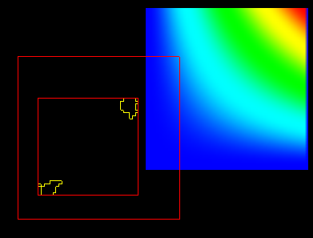

player/Utilities/QVTKRenderWindowInteractor[_mac].py

a - let's you pick/drag/resize an actor p - while hovering over an actor will pick it (and highlight w/ a red rectangle bding box) f - fly to a picked point (can mess up the 2D projection :) w/s - wireframe/surface r - reset view u - user-defined fn j/t - joystick/trackball c/o - camera/object (actor) modes